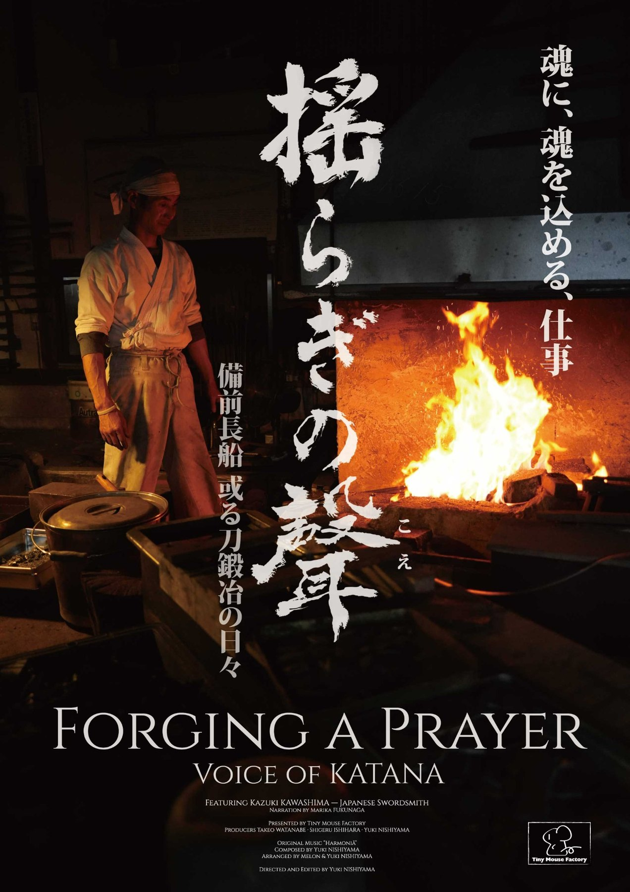
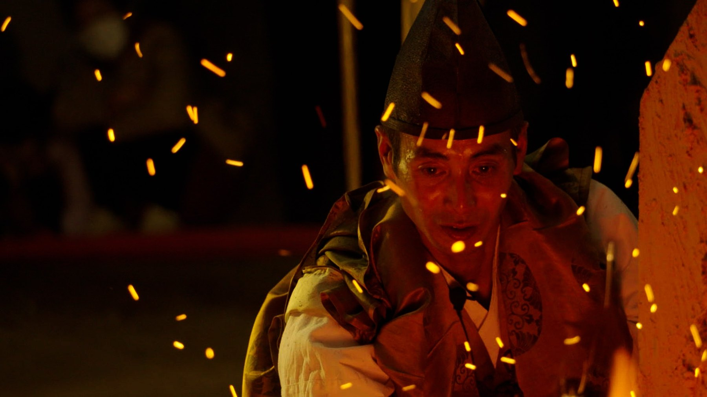
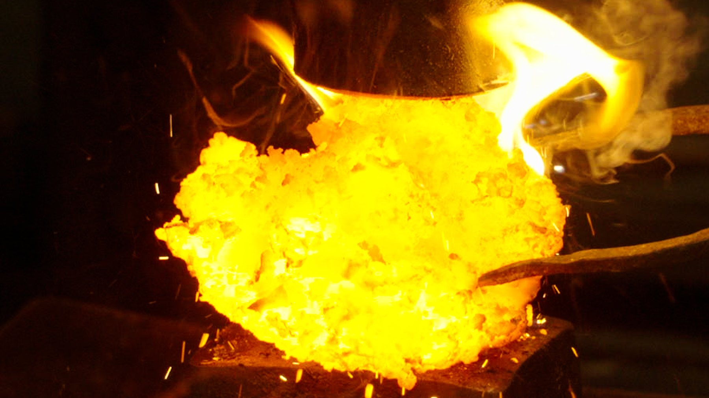
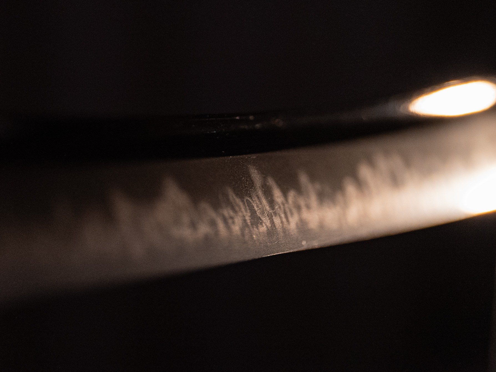
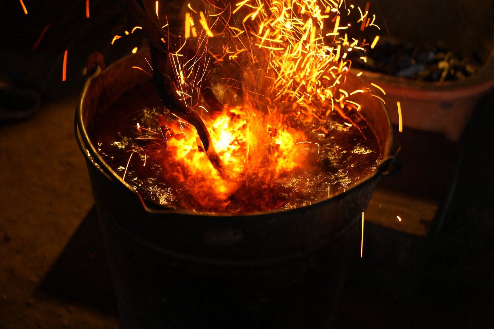
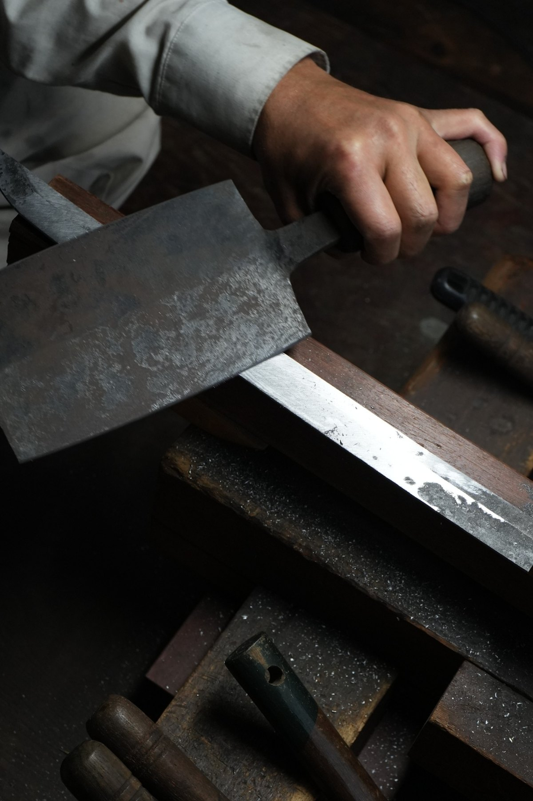
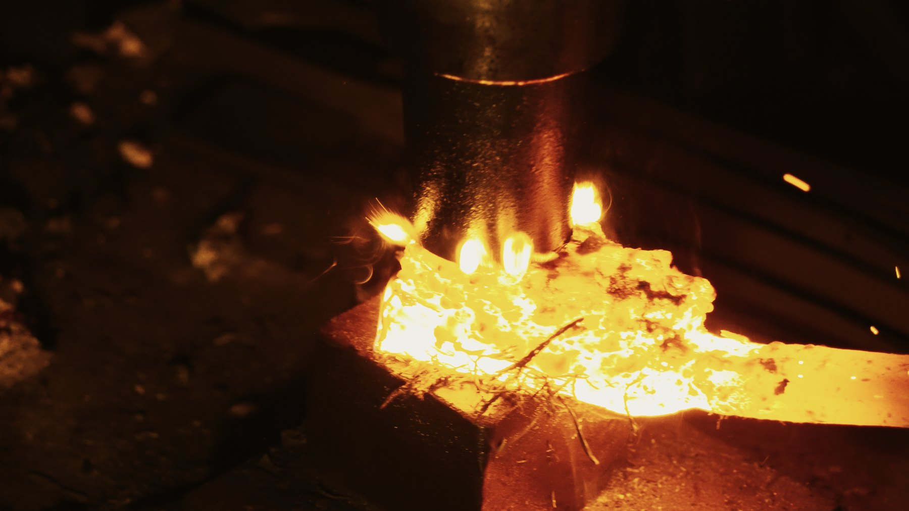
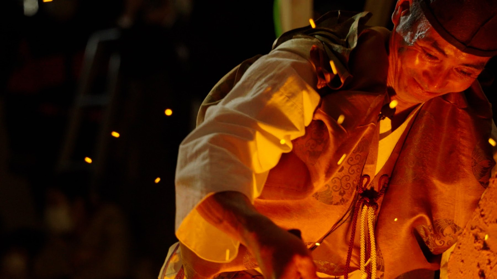
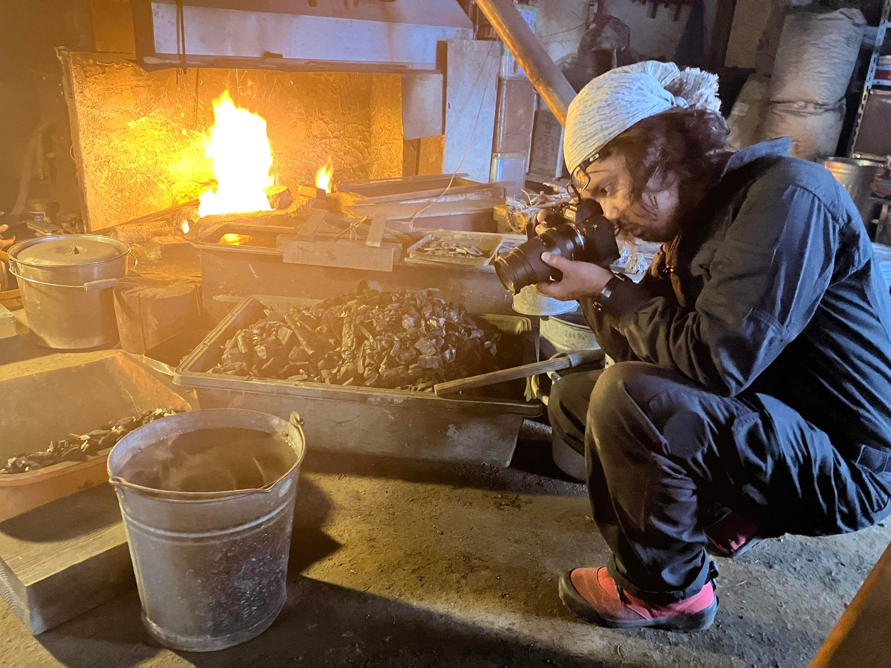

Documentary Film / 2027
揺らぎの聲
FORGING A PRAYER – VOICE OF THE KATANA
刀剣の古都・備前長船。一世紀ぶりの「神前打ち」。
奉納刀作りの一年を追うドキュメンタリー。
Synopsis
刀剣の古都・備前長船。
一世紀ぶりの「神前打ち」。
その日から始まった奉納刀作りの一年。
神の依り代になるかもしれない太刀に込める、想い・祈り・心——。
「刀は、武器じゃない」と語る刀匠の言葉とともに、日本人が忘れかけた「魂」と「仁」を見つめなおす。
FeaturingKazuki Kawashima / Japanese Swordsmith
Directed byYuki Nishiyama
Running time66 min
ProductionTiny Mouse Factory
EditingYuki Nishiyama
MusicHarmoniā — Yuki Nishiyama / Melon
Gallery
炎、鉄、水、そして人。
作刀の時間を、近くで見つめる。







Japanese Swordsmith
川島一城
Kazuki Kawashima
1970年、高知県安芸市生まれ。
高校卒業後、岐阜県関市で修業し、備前伝を学ぶ。
備前長船の地で独立し、鎌倉〜南北朝期に栄えた福岡一文字派の華やかな備前伝を志向して作刀を続ける。
「刀は武器ではない」と語り、守り刀として持つ人の心に寄り添う刀を目指している。

Director
にしやまゆうき
Yuki Nishiyama
1981年、兵庫県赤穂郡生まれ。
作編曲家として活動後、映像制作・撮影・ドローンへ活動を広げる。
2025年、初監督作『みんなのふね』を発表。
『揺らぎの聲』では監督・編集・音楽を担当。
Trailer
『揺らぎの聲』予告編
JAPANESE TRAILER
ENGLISH TRAILER
上映情報・映画祭情報は順次追加予定。